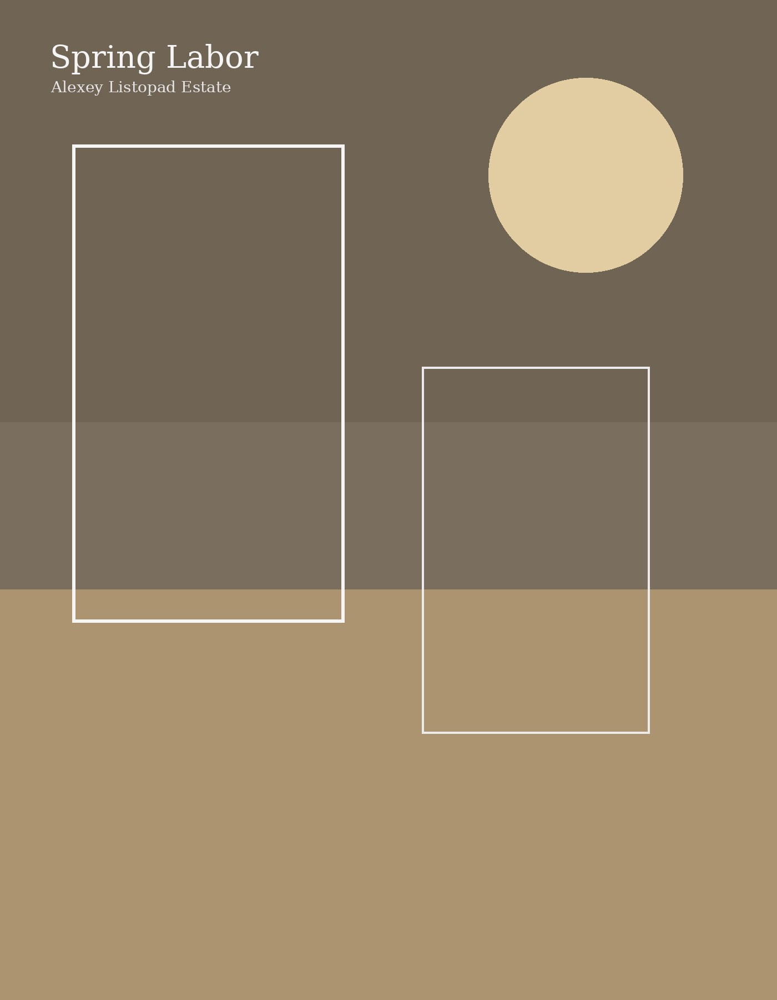

Spring Labor
A lyrical figurative landscape in which the human figure is absorbed by weather, light, and spring ground. The painting speaks less through narrative than through a sense of renewal and suspended stillness.
- Medium
- Oil on canvas
- Dimensions
- Approx. 70 × 70 cm
- Status
- Available by inquiry